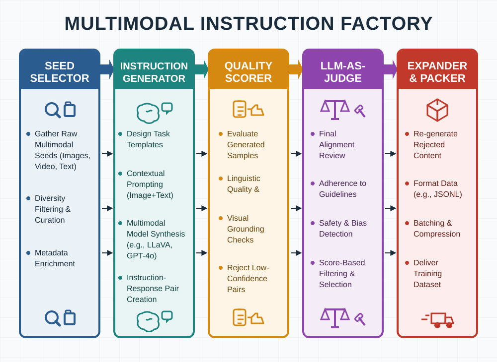

项目十三：Qwen-VL 多模态指令工厂¶
摘要¶
本项目围绕“多模态指令工厂”构建可复现的数据工程案例，重点说明业务目标、数据边界、架构决策、核心实现、验收指标与风险控制。章节将安装命令和脚本细节收敛到工程复盘视角，突出样本 schema、数据流、失败模式和可交付物之间的关系，帮助读者把前文方法转化为可审计、可扩展的项目资产。
关键词¶
多模态指令工厂；项目实战；可复现数据工程；数据流水线；验收指标
项目目标与读者收获¶
本项目以“多模态指令工厂”为核心案例，目标是构建覆盖图像、文本、OCR、图表和对话任务的多模态指令生产链。读者完成本章后，应能够辨认该场景的关键数据对象、拆分工程链路、设置验收指标，并将案例方法迁移到相近的数据工程任务中。
场景约束与数据边界¶
面向受控资产和样本工厂，不覆盖无授权媒体采集或全自动安全审核。这些边界使案例能够被复现和审计；当数据规模、数据来源、权限范围或部署环境变化时，需要重新评估采样策略、质量阈值、运行成本和合规要求。
本项目与 P03 的边界需要明确区分。P03 侧重 LLaVA 经典流程，强调图像资产、OCR、bbox、conversation 模板、可视化抽检和训练封装的基线链路；P13 则侧重现代多模态指令工厂能力，重点讨论 Qwen-VL 风格生成、self-consistency 质量校准、LLM-as-Judge 过滤、多语言扩展以及面向多图/视频引用的统一打包。因此，P13 不重复证明 LLaVA 基线流程，而是在 P03 已建立的数据工厂骨架上展示新版工厂能力如何扩展。
架构决策¶
本项目采用“资产筛选、任务模板、caption/OCR 信号、对话生成、质量评分和数据封装”的架构路径。该决策优先保证输入输出契约、版本可追踪、异常可定位和结果可复核，而不是把全部逻辑压缩为一次性脚本运行。
样本 schema / 数据流¶
核心数据流可概括为：
代码清单P13-1给出了流程示例。
代码清单P13-1：流程示例
样本 schema 至少应保留 id、source、content_or_payload、metadata、quality_signals、split_or_stage 与 audit_trace 等字段；具体字段由本项目的数据类型、下游任务和验收方式进一步细化。
核心实现片段¶
正文只保留能够说明设计取舍的关键实现片段。完整脚本、长配置、运行日志和大文件应放入配套仓库或附录说明；代码展示重点放在输入输出契约、质量阈值、异常处理和验收接口上。
实验或验收指标¶
验收指标包括任务覆盖、图文一致性、OCR 可用性、格式合格率、安全过滤率和人工抽检质量。若项目进入生产、课程或公开复现实验环境，还应记录版本号、依赖环境、随机种子、样本抽检结果和失败样本复盘记录。表 P13-1 概括了对应的对比维度与工程复核口径。
表 P13-1：多模态指令工厂出版验收表
| 验收维度 | 指标/证据 | 出版复核口径 |
|---|---|---|
| 任务覆盖 | 描述、OCR、图表、定位和多轮问答任务比例 | 任务类型需与数据来源、模型能力和下游训练目标对应 |
| 质量过滤 | 图文一致性、格式合格率、安全过滤率、self-consistency 结果和人工抽检质量 | LLM-as-Judge 结论需保留评分规则、抽检校准样例和多路采样一致性记录 |
| 多语言扩展 | 中文、英文及互译样本比例，跨语言术语一致性和格式保持率 | 多语言样本不得只统计数量，应抽检语义一致性、视觉指代和专名翻译 |
| 版权安全 | 图像授权、敏感内容拦截和再分发边界 | 公开样例优先使用可授权或自有资产，外部图像需单独登记 |
成本、风险与合规边界¶
成本主要来自视觉理解模型、OCR 和抽检；风险集中在图像授权、敏感内容、幻觉描述和任务单一化。涉及外部数据、个人信息、版权内容或第三方服务时，应保留来源说明、权限状态、脱敏策略、调用记录和人工复核记录。
常见失败模式¶
常见失败包括输入分布偏离、schema 字段缺失、质量阈值过松或过紧、评测样本覆盖不足、模型调用不稳定、结果无法回溯等。排查时应优先定位数据边界和中间产物，再检查模型、工具链与部署环境。
可复现资源说明¶
复现材料应包括数据来源说明、最小样本、配置文件、运行命令、指标脚本、检查报告和产物目录。正文保留必要片段；完整 notebook、长脚本和大文件作为配套资源独立维护。
背景与目标¶
在多模态大型语言模型（VLM）的数据工程中，模型的能力瓶颈往往不仅在于图文对数量，更在于高质量、多类型指令数据集的构建。项目三已经给出基于单图生成简单描述与问答指令的入门流程；在以 Qwen2.5-VL (Bai et al. 2025)、InternVL3 (Zhu et al. 2025) 为代表的现代多模态架构下，数据集还需要覆盖复杂推理、OCR 阅读、细粒度定位、多图交错和视频理解等任务类型。
因此，本章不是 P03 的重复版本。P03 回答的是“如何把 LLaVA 风格数据工厂的基础链路组织清楚”，本章回答的是“当基础模型、采样策略和质量过滤能力升级后，如何把多模态指令生产扩展成更接近工业工厂的流水线”。前者强调经典流程可复现，后者强调 Qwen-VL 生成、self-consistency、LLM-as-Judge、多语言扩展和统一打包等新版能力。
现代工业化多模态指令合成需要解决以下挑战：
- 指令多样性：除了基础描述，还需要复杂的推理、细粒度定位（Grounding）、图表与 OCR 阅读。
- 多源多形态：不仅支持单图，还要支持多图（Interleaved Images）与视频。
- 质量卡控：纯靠生成会产生严重幻觉（Hallucination），必须引入多路采样与 LLM-as-Judge (Zheng et al. 2023) 进行严格打分过滤。
本项目旨在构建一个完整的多模态指令数据工厂，从 Image-only 图像池（如 LAION 子集）开始，利用基础模型（Qwen2.5-VL-7B 与 Qwen2.5-72B）生产复杂指令样本。项目交付物是一套可复现流水线，而不是一次性生成结果；它应当能够迁移到医疗、法律、电商等私有图像库，并产出可进入垂直领域 SFT 的候选数据集。
架构设计¶
为了实现流水线作业，工厂被划分为五个核心组件。整体架构如图 P13-1 所示。

{kind=link}
- 种子选择器 (Seed Selector)：从百亿级海量图像库中，针对性地捞取 OCR 丰富、图表、真实复杂场景三类种子图像。
- 指令生成器 (Instruction Generator)：定义了 6 类复杂的指令模板，并通过 vLLM (Kwon et al. 2023) 调用 Qwen2.5-VL 进行高速生成。
- 质量打分器 (Quality Scorer / Self-consistency)：采用自我一致性（Self-consistency）机制 (Wang et al. 2023)，对于推理类问题进行多次采样验证。
- LLM-as-Judge 过滤器：使用一个纯文本侧极其强大的模型（如 Qwen2.5-72B-Instruct）作为裁判，对图文指令对的逻辑、详尽度打分（剔除 < 4.0 分的数据）。
- 多语言扩展与打包器 (Multilingual Expander & Packer)：进行中英互译扩展，并最终格式化为支持多图与视频引用的统一样式。
表 P13-2 将架构组件、代码入口和关键产物对应起来。与 P03 不同，P13 的重点不是再走一遍 LLaVA 的图文对数据准备，而是说明一个现代多模态指令工厂如何把“种子选择、模板、生成、过滤、扩展、打包和验收”组织成可复查链路。
表 P13-2：多模态指令工厂阶段产物与代码入口
| 阶段 | 代码入口 | 主要输入 | 主要输出 | 关键复核点 |
|---|---|---|---|---|
| 种子选择 | seed_selector.py |
LAION metadata 或私有图像资产清单 | seed list | 分辨率、宽高比、原始 caption 长度、授权状态 |
| 模板管理 | instruction_templates.py |
任务类型 | prompt template | 任务覆盖、模板重复率、提示词边界 |
| VLM 生成 | generate_with_qwen_vl.py |
seed list、模板、Qwen2.5-VL | raw instruction records | 模型版本、采样参数、失败样本 |
| LLM-as-Judge | llm_judge.py |
instruction、response | scored records | 评分规则、阈值、人工校准样例 |
| Self-consistency | self_consistency.py |
多路生成结果 | consistency score | 多路采样一致性、推理题稳定性 |
| 多语言扩展 | multilingual_expand.py |
高质量英文样本 | bilingual records | 术语一致性、视觉指代保持 |
| 统一打包 | pack_multi_image_video.py |
scored records | mm_sft_final.jsonl |
Qwen 格式、图片/视频路径、conversation 字段 |
| 单元测试 | tests/test_factory.py |
模板、judge、扩展、打包函数 | 测试报告 | 基本契约和示例输出完整性 |
表 P13-2 的关键作用是把“生成”从单个模型调用中拆开。真实项目里，VLM 生成只是流水线中间环节；前面需要受控种子和任务模板，后面需要一致性检查、评分过滤、多语言复核和格式打包。若只保留生成脚本，章节会像演示 demo；若保留阶段产物和复核字段，章节才具备项目章的工程厚度。
分步实现¶
Step 1: 种子选择器¶
从开源 LAION 数据集子集 (Schuhmann et al. 2022) 中，利用已有的元数据（如图片宽高、原始 caption 长度、剪贴板标签等）筛选出有潜力生成高质量指令的种子。
代码清单P13-2给出了Python 实现片段。
from datasets import load_dataset
def select_seeds(dataset_name="laion/laion2B-en", num_samples=5000):
stream = load_dataset(dataset_name, split="train", streaming=True)
seeds = []
for item in stream:
width, height = item.get("WIDTH", 0), item.get("HEIGHT", 0)
caption = str(item.get("TEXT", ""))
if width > 512 and height > 512 and 0.5 < width / height < 2.0:
if len(caption.split()) > 10:
seeds.append({"url": item["URL"], "original_caption": caption})
if len(seeds) >= num_samples:
break
return seeds
代码清单P13-2：Python 实现片段
Step 2: 指令模板设计¶
不同于固定问题的 LLaVA 数据，本项目需要为大模型定义多样化任务模板，并控制生成目标、输出格式和风险边界。
代码清单P13-3给出了Python 实现片段。
# code/zh/project_13_mm_instruction_factory/instruction_templates.py
import random
TEMPLATES = {
"detailed_description": [
"Please provide a highly detailed, comprehensive description of this image, capturing every visible element, spatial relationship, and background context.",
"Describe this image as if you are explaining it to someone who cannot see it, ensuring no detail is left out."
],
"complex_reasoning": [
"Based on the visual evidence in the image, infer the sequence of events that likely led to this scene. Explain your reasoning step-by-step.",
"What are the implicit relationships between the objects shown? Provide a logical deduction."
],
"ocr_reading": [
"Extract all visible text in this image and format it into a structured markdown table or list."
]
}
def get_random_prompt(task_type):
return random.choice(TEMPLATES.get(task_type, TEMPLATES["detailed_description"]))
代码清单P13-3：Python 实现片段
Step 3: 使用 vLLM 高速生成指令¶
借助 vllm 的并发吞吐能力，可以将筛选出的图片与指令模板送入基础多模态模型进行批量生成。
代码清单P13-4给出了Python 实现片段。
from vllm import LLM, SamplingParams
def generate_instructions(seeds, model_path="Qwen/Qwen2.5-VL-7B-Instruct"):
llm = LLM(model=model_path, trust_remote_code=True, max_num_seqs=16)
params = SamplingParams(temperature=0.7, top_p=0.95, max_tokens=1024)
requests = []
for seed in seeds:
prompt = get_random_prompt("detailed_description")
requests.append({
"prompt": render_qwen_vl_prompt(prompt),
"multi_modal_data": {"image": seed["url"]},
"metadata": {"url": seed["url"], "instruction": prompt},
})
outputs = llm.generate(requests, sampling_params=params)
return [to_instruction_record(req, out) for req, out in zip(requests, outputs)]
代码清单P13-4：Python 实现片段
Step 4: LLM-as-Judge 质量过滤¶
生成响应往往伴随幻觉，因此需要引入判别器，例如 Qwen2.5-72B-Instruct。由于纯文本 72B 模型无法直接接收图片，本项目采用 Text-only Evaluation：让 72B 评判多模态模型生成的“长描述”内部逻辑是否自洽、结构是否严密。
代码清单P13-5给出了Python 实现片段。
# code/zh/project_13_mm_instruction_factory/llm_judge.py
import json
def score_with_llm_judge(generated_data):
"""
原型验证逻辑：在真实流水线中，此处调用 vLLM 部署的 72B 模型 API。
输入为 `Instruction` 和 `Response`，输出为 1-5 分。
"""
scored_data = []
for item in generated_data:
# 模拟调用评委打分
# prompt = f"Rate the quality of this response to the instruction. Score 1 to 5. Response: {item['response']}"
# score = call_72b_api(prompt)
# 模拟打分规则：长度大于 100 词且不包含过度重复视作高质量
word_count = len(item["response"].split())
score = 4.5 if word_count > 50 else 3.0
if score >= 4.0:
item["judge_score"] = score
scored_data.append(item)
print(f"Filtered {len(generated_data)} down to {len(scored_data)} high-quality samples.")
return scored_data
代码清单P13-5：Python 实现片段
Step 5: 统一下游格式打包¶
无论是单图、多图还是视频片段，最终统一按照开源社区（如 ShareGPT）或者特定模型（如 Qwen2.5-VL）的微调格式输出 JSONL。
代码清单P13-6给出了Python 实现片段。
import json
def pack_to_qwen_format(scored_data, output_path="./data/mm_sft_final.jsonl"):
with open(output_path, "w", encoding="utf-8") as f:
for item in scored_data:
record = {
"type": "image",
"image": item["url"],
"conversations": [
{"from": "user", "value": f"<image>\n{item['instruction']}"},
{"from": "assistant", "value": item["response"]},
],
"quality": {"judge_score": item["judge_score"]},
}
f.write(json.dumps(record, ensure_ascii=False) + "\n")
代码清单P13-6：Python 实现片段
工程运行与最小复现路径¶
P13 的代码目录是 code/zh/project_13_mm_instruction_factory。与 P11、P14 相比，这个项目更偏“生成式数据工厂”，因此最小复现路径不是跑一个固定 shell 脚本，而是按阶段串联函数：先选择 seeds，再按模板生成指令，随后进行 judge、self-consistency、多语言扩展和格式打包。教学环境中可以先用少量 seed 和 mock judge 走通产物契约，再替换为真实 Qwen2.5-VL 和 Qwen2.5-72B-Instruct。
代码清单P13-7 给出最小运行顺序。实际工程可以把它写成 shell、Makefile 或 Airflow/Ray 任务，但项目章中更重要的是展示阶段边界和产物流转。
from seed_selector import select_seeds
from generate_with_qwen_vl import generate_instructions
from llm_judge import score_with_llm_judge
from self_consistency import self_consistency_filter
from multilingual_expand import expand_multilingual
from pack_multi_image_video import pack_to_qwen_format
seeds = select_seeds(num_samples=100)
raw = generate_instructions(seeds)
consistent = self_consistency_filter(raw)
scored = score_with_llm_judge(consistent)
expanded = expand_multilingual(scored)
pack_to_qwen_format(expanded, "./data/mm_sft_final.jsonl")
代码清单P13-7：Python 实现片段
这段代码说明了工厂的最小闭环，但还不是生产脚本。生产运行应补充四类控制：第一，模型调用需要记录模型路径、temperature、top-p、max tokens 和并发参数；第二，seed 需要记录来源、授权和下载状态；第三，judge 需要保留评分 prompt、阈值和人工校准集；第四，打包前要检查图片链接、conversation 格式和样本去重。
表 P13-3 给出本项目应保留的运行记录。
表 P13-3：多模态指令工厂运行记录项
| 类别 | 记录项 | 作用 |
|---|---|---|
| 资产版本 | 图像来源、URL、授权、下载时间 | 证明样本可追溯 |
| 生成模型 | Qwen2.5-VL 路径、推理框架、采样参数 | 解释输出差异 |
| 模板版本 | 任务类型、模板文本、模板 hash | 控制任务分布 |
| Judge 版本 | 评分模型、评分 rubric、阈值 | 复核过滤结果 |
| 多语言版本 | 翻译模型、术语表、语言比例 | 复核跨语言一致性 |
| 打包版本 | 输出格式、字段 schema、目标训练框架 | 保证可被训练脚本读取 |
| 抽检记录 | 人工样本、失败样本、修订意见 | 支撑发布门禁 |
数据 schema 与样本契约¶
多模态指令样本的最小记录不能只有 image、instruction 和 response 三个字段。项目章应强调：训练格式可以很简洁，但工程中间态必须更完整。否则，一旦出现幻觉、格式错误或版权问题，数据团队无法追溯样本来自哪张图、哪个模板、哪个模型调用和哪次过滤。
表 P13-4 给出建议的中间态 schema。
表 P13-4：多模态指令工厂中间态样本 schema
| 字段 | 示例 | 说明 |
|---|---|---|
sample_id |
p13_laion_000001 |
稳定主键，进入全流程日志 |
asset.url |
https://...jpg |
原始图像或视频地址 |
asset.license |
cc-by、internal |
发布与再分发判断依据 |
seed.original_caption |
原始 alt text | 用于判断 seed 质量 |
task.type |
detailed_description、ocr_reading |
控制任务分布 |
prompt.template_id |
ocr_v1_002 |
追踪模板版本 |
generation.model |
Qwen2.5-VL-7B-Instruct |
追踪生成模型 |
generation.response |
长回复文本 | 进入候选样本 |
quality.judge_score |
4.5 |
LLM-as-Judge 过滤依据 |
quality.consistency_score |
1.0 |
多路采样一致性 |
language |
en、zh |
多语言样本区分 |
audit_trace |
运行批次、时间、脚本版本 | 复盘与下线依据 |
最终写入 mm_sft_final.jsonl 的 Qwen 格式可以比中间态更窄，但不建议丢弃中间态。训练文件服务于训练框架，审计文件服务于质量和发布；二者可以通过 sample_id 关联。
质量过滤：从长度阈值到可校准 rubric¶
示例代码中的 llm_judge.py 使用长度阈值模拟评分：回复超过一定词数即给 4.5 分，否则给 3.0 分。这适合教学演示，但不能作为真实发布门禁。真实 LLM-as-Judge 至少应包含四类评分维度：图文一致性、回答完整度、任务遵循度和安全合规性。
表 P13-5 给出一个可用于生产化改造的 judge rubric。
表 P13-5：多模态指令样本 LLM-as-Judge 评分 rubric
| 评分维度 | 5 分表现 | 低分风险 |
|---|---|---|
| 图文一致性 | 只描述图像中有证据支持的内容 | 幻觉主体、动作或文字 |
| 任务遵循度 | 严格回答模板要求，如 OCR 输出表格 | 答非所问或格式不合格 |
| 细节完整度 | 覆盖主体、空间关系、文字和背景 | 过短、泛化、缺少可训练信息 |
| 推理可靠性 | 推理步骤可由视觉证据支持 | 过度推断因果或意图 |
| 安全合规 | 不输出敏感身份推断或不当内容 | 涉及隐私、偏见或危险指导 |
| 语言质量 | 表达清晰，无严重重复 | 机械重复、乱码或混合语言异常 |
Self-consistency 的作用是补充 judge 的盲区。对于复杂推理题，可以让模型生成多路答案，再比较结论是否一致、关键证据是否一致。如果多路答案在主体、文字或空间关系上冲突，即使其中某一路写得很长，也不应直接进入训练集。self_consistency.py 当前是简化实现，出版稿应明确它是“接口占位 + 教学逻辑”，真实项目需要接入多路采样和一致性度量。
多语言扩展与跨语言验收¶
多语言扩展不是简单复制英文 instruction，再加一个 instruction_zh 字段。多模态任务中，跨语言错误常常发生在视觉指代和专名翻译上。例如，“the sign on the left” 被翻成“右侧标志”，或品牌、地名、单位被错误本地化。P13 的多语言扩展应把中文和英文视为两套需要抽检的训练样本，而不是数量翻倍的技巧。
表 P13-6 给出多语言验收项目。
表 P13-6：多语言扩展验收项目
| 验收项 | 检查方式 | 常见问题 |
|---|---|---|
| 指代一致性 | 对照图像检查 left/right、top/bottom、foreground/background | 方位词翻译错误 |
| 术语一致性 | 使用术语表检查 OCR、chart、bbox、caption 等词 | 术语前后不统一 |
| 专名保留 | 检查品牌、地名、人名和单位 | 过度翻译或误译 |
| 格式保持 | 检查表格、列表、JSON、Markdown | 翻译破坏结构 |
| 安全边界 | 检查敏感内容在多语言中是否被绕过 | 英文过滤有效但中文失效 |
如果项目面向中文模型训练，建议不要只把英文样本翻译成中文，而应保留一部分中文原生模板和中文原生 judge。翻译样本有利于扩量，但中文原生样本更能覆盖中文用户的真实提问习惯。
测试覆盖与代码注意事项¶
tests/test_factory.py 已覆盖模板存在、随机 prompt 类型、judge 过滤、中文扩展和 JSONL 打包。这些测试能够防止最基本的接口破坏，但仍不足以证明工厂可发布。尤其要注意：当前 generate_with_qwen_vl.py 是教学化示例，真实接入 vLLM 或 Qwen-VL 前，需要补齐输入变量、异常处理、模型调用结果解析和失败样本记录。项目章中展示它的目的是说明生成阶段的接口，而不是承诺它已经具备生产完整性。
表 P13-7 总结测试覆盖和缺口。
表 P13-7：多模态指令工厂测试覆盖与验收缺口
| 测试项 | 已覆盖内容 | 仍需补充 |
|---|---|---|
| 模板测试 | 三类模板存在，prompt 可返回字符串 | 模板重复率、任务比例 |
| judge 测试 | 短回复过滤、长回复保留 | 真实 judge rubric 和人工一致性 |
| 多语言测试 | 生成中文扩展字段 | 语义一致性和格式保持 |
| 打包测试 | JSONL 文件可写出 | conversation 字段完整抽检 |
| 端到端 mock | 测试入口存在 | 小样本真实模型运行 |
常见故障与排查路径¶
种子阶段最常见的问题是图像链接失效、图片尺寸字段缺失或原始 caption 质量过低。排查时应先统计被过滤原因，而不是只看最终 seed 数量。如果大量图片因为宽高比被过滤，需要确认字段单位和数据源 schema 是否正确。
生成阶段常见问题包括模型输入格式错误、图片无法下载、VLM 返回空文本、并发过高导致 OOM 或超时。若使用 vLLM，需要记录并发数、显存占用和失败请求。若使用 API，需要记录重试次数、错误码和计费单位。
过滤阶段常见问题是 judge 过于偏好长回答。长回答不一定高质量，尤其在多模态场景中，长回答可能包含更多幻觉。建议将高分样本、低分样本和边界分样本分别抽检，并定期用人工标注校准 judge。
打包阶段常见问题是图片 URL、<image> 标记和 conversation 格式不匹配目标训练框架。排查时应随机读取 JSONL，确认每行都是合法 JSON，conversations[0].value 包含图像占位符，assistant 回复非空，且质量字段能回链到中间态记录。
人工抽检与发布门禁¶
多模态指令工厂很容易在自动指标上表现良好，但在人工阅读时暴露问题。例如，judge 分数较高的样本可能只是语言流畅，却没有忠实描述图像；多语言扩展样本可能语法正确，但左右方向、数量或 OCR 内容被翻错。因此，发布前必须设置人工抽检门禁。
表 P13-8 给出推荐抽检分层。抽检不是只看随机样本，而是要覆盖模型最容易失败的区域。
表 P13-8：多模态指令工厂人工抽检分层
| 抽检层 | 样本来源 | 检查重点 |
|---|---|---|
| 高分样本 | judge score 最高的一批 | 判断 judge 是否过度奖励长文本 |
| 边界样本 | 分数接近阈值的样本 | 判断阈值是否过严或过松 |
| 低分样本 | 被过滤样本 | 判断是否误删高价值样本 |
| OCR 样本 | ocr_reading 任务 |
检查文字是否逐字准确、格式是否保持 |
| 推理样本 | complex_reasoning 任务 |
检查推理是否有视觉证据 |
| 中文样本 | 多语言扩展结果 | 检查术语、方位和专名 |
| 多图/视频样本 | packer 扩展结果 | 检查引用顺序和占位符 |
人工抽检建议采用“双人复核 + 冲突仲裁”。第一位复核者判断图文一致性和任务遵循度，第二位复核者判断语言质量和安全边界。如果两人结论冲突，则进入仲裁样本池。仲裁样本反过来用于修订 judge prompt、模板和过滤阈值。这样，人工抽检不是一次性质量检查，而是工厂迭代的一部分。
发布门禁至少包括四项。第一，样本来源必须可追踪，外部图片不得只保留裸 URL。第二，训练文件必须能被目标框架读取，不能只通过 JSON 语法检查。第三，judge 与人工抽检之间要有一致性报告。第四，若发布多语言样本，必须分别报告中英文质量，而不是只报告总样本数。
表 P13-9 给出发布门禁清单。
表 P13-9：多模态指令工厂发布门禁清单
| 门禁 | 必备证据 | 不通过时处理 |
|---|---|---|
| 来源门禁 | URL、license、下载状态、删除请求处理方式 | 下线无授权或不可追踪样本 |
| 格式门禁 | JSONL 校验、训练 loader 小样本读取 | 修复 packer 或字段 schema |
| 质量门禁 | judge 分布、人工抽检通过率、失败样本类型 | 调整模板、阈值或生成参数 |
| 多语言门禁 | 中文/英文分别抽检报告 | 回滚低质量翻译批次 |
| 安全门禁 | 敏感内容、隐私、身份推断检查 | 删除样本并更新过滤规则 |
| 版本门禁 | 模型版本、模板版本、运行批次 | 冻结版本后再发布 |
多图与视频扩展路径¶
P13 的代码中包含 pack_multi_image_video.py，说明本项目的目标不止于单图 SFT。现代 VLM 训练越来越依赖 interleaved images、多图对比和短视频片段。扩展时，核心问题不是把多个 <image> 标签拼在一起，而是让 instruction 清楚指向每个视觉输入，并让 answer 明确说明比较、排序、时序或跨图关系。
表 P13-10 总结单图、多图和视频样本的差异。
表 P13-10：多模态指令类型扩展对照
| 类型 | 输入组织 | 指令重点 | 常见错误 |
|---|---|---|---|
| 单图 | 一个 <image> |
描述、OCR、局部推理 | 幻觉物体或文字 |
| 多图对比 | <image_1>、<image_2> 等 |
差异、共同点、排序、变化 | 混淆图片顺序 |
| 图文交错 | 文本段落夹多个图片 | 根据上下文引用图片 | 引用错图或遗漏上下文 |
| 短视频 | 多帧或 <video> |
动作、时序、镜头运动 | 把视频描述成静态图 |
| 图表截图 | 图片 + OCR/表格结构 | 数值读取、趋势解释 | 编造数值或坐标轴 |
扩展到视频时，可以复用 P14 的 shot-level 数据结构：frame_paths、caption_en、shot_language 和 camera_motion 都可以作为 P13 的视频指令素材。例如，一个视频问答样本可以要求模型解释镜头中主体如何移动，或者要求模型根据相机运动判断画面表现方式。这样 P13 与 P14 就不是两个孤立项目，而是“指令工厂”和“视频数据流水线”的上下游关系。
交付物目录与版本管理¶
P13 的交付物建议拆成 raw、scored、expanded、packed 和 reports 五类。这样做可以避免训练文件和审计文件混在一起，也方便在某个阶段回滚。
表P13-11汇总了本节的关键对象、工程要点与复核口径。
表 P13-11：多模态指令工厂交付物目录
| 路径 | 内容 | 说明 |
|---|---|---|
data/seeds.jsonl |
种子资产清单 | 保留 URL、授权、原始 caption 和筛选原因 |
data/generated_raw.jsonl |
VLM 原始生成结果 | 不直接训练，用于复查 |
data/scored.jsonl |
judge 后结果 | 保留分数、rubric 和模型版本 |
data/consistent.jsonl |
self-consistency 后结果 | 保留多路采样一致性证据 |
data/multilingual.jsonl |
多语言扩展样本 | 保留语言、术语表版本和翻译模型 |
data/mm_sft_final.jsonl |
训练输入文件 | 面向 Qwen-VL 或目标训练框架 |
reports/task_distribution.json |
任务分布报告 | 检查是否单一任务过多 |
reports/human_review.md |
人工抽检报告 | 发布门禁核心证据 |
reports/license_audit.md |
版权与来源审计 | 公开发布必备 |
版本管理上，建议对模板和 judge prompt 做 hash。模型版本不变但模板文本改变，也会导致样本分布变化；judge prompt 轻微变化，也可能让通过率显著波动。发布报告中应同时给出模型版本、模板版本、judge prompt 版本和数据批次，而不是只写“使用 Qwen2.5-VL 生成”。
数据看板与持续迭代¶
多模态指令工厂上线后，需要持续观察样本分布，而不是一次性生成后直接进入训练。看板可以先从 JSONL 统计脚本开始，不必一开始就建设复杂平台。关键是每次生成批次都能回答：任务类型是否均衡、judge 通过率是否异常、多语言比例是否稳定、失败样本集中在哪些资产类型。
表 P13-12 给出推荐看板指标。
表 P13-12：多模态指令工厂数据看板指标
| 看板指标 | 统计对象 | 用途 |
|---|---|---|
| seed 通过率 | seeds.jsonl |
判断资产筛选阈值是否过严 |
| 任务类型分布 | task.type |
防止详细描述类样本过多 |
| 平均 response 长度 | raw/scored 样本 | 发现模板化短答或冗长幻觉 |
| judge 分数分布 | quality.judge_score |
观察模型和 rubric 是否漂移 |
| consistency 分布 | quality.consistency_score |
发现推理任务不稳定 |
| 中英文比例 | language |
控制多语言扩展规模 |
| 格式错误率 | JSONL 校验结果 | 发现 packer 或模板问题 |
| 人工抽检通过率 | review report | 判断是否达到发布门禁 |
| 安全拦截率 | safety filter | 监控敏感内容和隐私风险 |
看板应当按批次保存。若某次生成的 judge 通过率突然升高，不一定说明质量变好，可能是 judge prompt 变松、模板变长或模型倾向输出更啰嗦的回答。若 OCR 任务通过率显著低于描述任务，应单独检查 OCR 图片质量和评分 rubric，而不是简单提高总阈值。
样本撤回与版权响应¶
多模态数据比纯文本更容易触发版权、肖像权和隐私问题。即使使用公开 URL，也不等于可以无限制再分发图像和生成结果。P13 必须保留撤回路径：当某张图像、某个作者或某个来源集合需要删除时，系统应能定位相关 instruction、翻译样本和最终训练文件。
表 P13-13 给出撤回处理路径。
表 P13-13：多模态指令样本撤回处理路径
| 步骤 | 操作 | 影响产物 |
|---|---|---|
| 登记请求 | 记录 URL、作者、来源、请求时间和证据 | ticket |
| 定位资产 | 按 URL、hash、source 或 sample_id 查找 seed | seeds.jsonl |
| 定位派生样本 | 查找 raw、scored、multilingual 和 packed 记录 | 全部中间态 |
| 删除训练样本 | 从 mm_sft_final.jsonl 中移除对应行 |
训练文件 |
| 重算统计 | 更新任务分布、语言比例和质量报告 | reports |
| 发布说明 | 记录删除原因和新版本号 | release note |
撤回机制要求中间态保留稳定 sample_id。如果只保存最终 Qwen conversation 格式，后续很难从训练样本反查原始图像和生成批次。因此，P13 的工程产物必须区分“训练窄表”和“审计宽表”。
领域迁移：从通用图像到行业资产¶
P13 的方法可以迁移到医疗影像、工业质检、电商商品图、法律证据截图、教育图表等领域，但迁移时必须重新设计模板和验收门禁。不同领域的视觉证据和风险边界差异很大，不能直接沿用通用 LAION 样本的模板。
表 P13-14 给出领域迁移时的调整方向。
表 P13-14：多模态指令工厂领域迁移要点
| 领域 | 资产类型 | 模板调整 | 风险控制 |
|---|---|---|---|
| 医疗 | 影像、检查报告截图 | 描述异常区域、不得给诊断结论 | 专家复核、隐私脱敏 |
| 工业 | 缺陷图、设备照片 | 描述缺陷位置、形态和严重程度 | 内部机密、误判成本 |
| 电商 | 商品图、详情页截图 | 属性抽取、对比、OCR 读取 | 品牌授权、夸大描述 |
| 金融 | 财报截图、图表 | 表格读取、趋势解释、证据引用 | 数值准确性、投资建议边界 |
| 教育 | 题图、板书、教材插图 | 解题提示、图表理解 | 版权、答案泄漏 |
领域迁移时，应优先建立少量高质量模板和专家抽检集，再扩大量。对高风险领域，不建议完全依赖 LLM-as-Judge；可以让 judge 做初筛，但最终发布门禁应由领域专家或规则系统共同决定。
与 P03 和 P14 的衔接¶
P13 位于 P03 与 P14 之间。P03 建立 LLaVA 经典图文对和 conversation 基线，P13 在此基础上引入 Qwen-VL 风格生成、judge、self-consistency 和多语言扩展，P14 则把视觉输入从静态图片扩展到视频 shot。三者构成从单图基线到现代多模态工厂再到视频生成数据的递进关系。
表 P13-15 总结三者边界。
表 P13-15：P03、P13 与 P14 的项目边界
| 项目 | 核心对象 | 关键能力 | 不应混淆的边界 |
|---|---|---|---|
| P03 | LLaVA 图文对与 conversation | 经典流程、OCR、bbox、可视化抽检 | 不强调新版 Qwen-VL 工厂能力 |
| P13 | 多模态指令样本 | 模板、VLM 生成、judge、多语言、打包 | 不负责视频切分和 T2V 质量过滤 |
| P14 | 视频 shot 数据 | 镜头切分、运动、美学、caption、镜头语言 | 不负责大规模指令多样化生成 |
这样组织后，读者可以把 P03 当作基础数据结构，把 P13 当作指令生成工厂，把 P14 当作视频素材和时序监督来源。若后续要构建 Video-QA 或 Video-Instruct 数据集，可以先用 P14 生成视频片段和镜头字段，再用 P13 的模板、judge 和打包机制生成指令样本。
结果展示与验收¶
示例验收设定为：在单节点 4 卡 4090 环境下部署 Qwen2.5-VL-7B（vLLM 推理），并通过 API 调用 72B 模型作为判别器，产出一批多模态指令候选样本。正式复现时，应以实际任务配置、生成日志和样本 manifest 替换示例规模。
- 任务分布：涵盖了详细描述（40%）、复杂推理（30%）、OCR与表格（20%）以及细粒度定位（10%）。没有出现类型偏斜过高（单一分类 > 40%）。
- 质量分布：通过 LLM-as-Judge 过滤的样本应记录均值、分位数和拒绝原因。示例验收中可以使用 4.3 / 5.0 这样的平均分展示报告格式，但正式结果必须保留评分明细和判别器版本。
正式验收时，应同时检查四类指标：第一，样本是否能被下游训练脚本稳定读取；第二，任务类型分布是否符合预设配比；第三，图像、指令和回答之间是否存在明显错配；第四，来源许可、模型许可和生成产物再分发规则是否已登记。只有通过这些检查，生成数据才能从候选池进入训练集。
成本与优化¶
数据合成工厂的运转效率与成本应按实际推理日志和账单核算：
- 合成成本：示例估算可写为私有算力上 7B 模型生成一条带图像处理的长回复约需 1-2 秒；如果使用商业 API，每千条高质量数据的成本示例量级约为 \(5-\)10。正式结果必须保留模型版本、并发配置、失败重试率和 API 账单。
- 扩展性：vLLM 的张量并行能够承载一定规模的多模态生成压力。当算力不足时，可以通过调低
max_num_seqs、降低采样温度（temperature）和分批调度任务平稳降级。
扩展思考¶
相比单纯依赖人工标注或高成本闭源模型蒸馏的 LLaVA 数据体系，通过 Qwen-VL + LLM-as-Judge (Zheng et al. 2023) 的自我蒸馏（Self-Distillation）可以降低微调数据构建成本，但仍需要人工抽检和许可审查兜底。
后续可以在这套流水线中插入视频片段：在打包器（Packer）中将连续采样帧用多个 <image> 标签或 <video> 统一封装，即可扩展到面向 T2V 或 Video-QA 模型的数据合成。
数据合规与开源许可说明¶
在构建和发布指令数据集时，需遵守以下协议：
- LAION 种子图：原始图链接受 CC-BY 或特定公共协议保护，仅供研究使用。
- Qwen2.5-VL：模型的使用及生成内容的再分发受其对应的开源/商业许可协议约束。
- 生成产物：本流水线最终合成的指令数据集（如
dataforge-mm-instruction-50k）建议采用 CC-BY-SA 协议向社区开源发布。
本章小结¶
本章以“多模态指令工厂”为案例，展示了构建覆盖图像、文本、OCR、图表和对话任务的多模态指令生产链的工程组织方式。案例的主要价值在于把任务定义、数据边界、架构决策、样本 schema、指标验收和复现资源放在同一条链路中，使项目不再只是操作步骤，而成为可复核的案例研究。
该案例的边界同样需要被清楚保留。面向受控资产和样本工厂，不覆盖无授权媒体采集或全自动安全审核。在更大规模、更高风险或更强合规约束的场景中，应重新评估数据来源、权限状态、人工复核比例、运行成本和失败回滚方案。
作为第十四篇的一部分，本章对应前文方法在项目层面的落地验证。读者可将本案例与第十三篇的数据配方、前文的平台治理章节以及附录中的检查清单合并使用，形成从方法理解到工程交付的闭环。
参考文献¶
Bai S, Chen K, Liu X, Wang J, Ge W, Song S, Dang K, Wang P, Wang S, Tang J, et al. (2025) Qwen2.5-VL Technical Report. arXiv preprint arXiv:2502.13923.
Zhu J, Wang W, Chen Z, Liu Z, Ye S, Gu L, Duan Y, Tian H, Su W, Shao J, et al. (2025) InternVL3: Exploring Advanced Training and Test-Time Recipes for Open-Source Multimodal Models. arXiv preprint arXiv:2504.10479.
Kwon W, Li Z, Zhuang S, Sheng Y, Zheng L, Yu C H, Gonzalez J E, Zhang H, Stoica I (2023) Efficient Memory Management for Large Language Model Serving with PagedAttention. In: Proceedings of the 29th ACM Symposium on Operating Systems Principles, pp 611-626. https://doi.org/10.1145/3600006.3613165.
Schuhmann C, Beaumont R, Vencu R, Gordon C, Wightman R, Cherti M, Coombes T, Katta A, Mullis C, Wortsman M, et al. (2022) LAION-5B: An Open Large-Scale Dataset for Training Next Generation Image-Text Models. In: Advances in Neural Information Processing Systems 35, pp 25278-25294. Available at: https://arxiv.org/abs/2210.08402.
Wang X, Wei J, Schuurmans D, Le Q, Chi E, Narang S, Chowdhery A, Zhou D (2023) Self-Consistency Improves Chain of Thought Reasoning in Language Models. In: International Conference on Learning Representations. arXiv:2203.11171.
Zheng L, Chiang W L, Sheng Y, Zhuang S, Wu Z, Zhuang Y, Lin Z, Li Z, Li D, Xing E P, Zhang H, Gonzalez J E, Stoica I (2023) Judging LLM-as-a-Judge with MT-Bench and Chatbot Arena. In: Advances in Neural Information Processing Systems 36. arXiv:2306.05685.